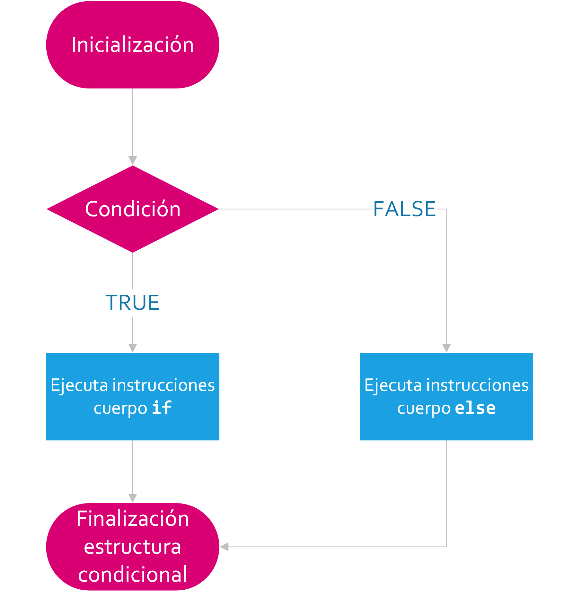

Introducción a programación
¿Que es una variable?
Una variable es un nombre que se asocia con una porción de la memoria del ordenador, en donde se guarda el valor asignado a dicha variable. Consiste en un elemento al cual le damos un nombre y le atribuimos determinado tipo de información. Las variables pueden ser consideradas como la base de la programación. Los datos que se manejan en nuestro programa se almacenan en variables. El concepto de variable debe verse como un contenedor de información.
Tipos de variables
| TIPO DE DATOS | MEMORIA REQUERIDA | RANGO DE VALORES | EQUIVALENCIA CON USADAS EN PSEUDOCÓDIGO | OBSERVACIONES |
|---|---|---|---|---|
| Integer(Entero) | 2 bytes ó 4 bytes según versión | - 32768 a 32767 ó -2.147.483.648 a 2.147.483.647 según versión | Entero | Uso en contadores, control de bucles etc. |
| Long (Entero largo) | 4 bytes ó 8 bytes según versión | - 2147483648 a 2147483647 ó -9,2E+18 a 9,2E+18 según versión | Entero | Igual que integer pero admite un rango más amplio |
| Single (Decimal simple) | 4 bytes | - 3,4·1038 a 3,4·1038 | Real | Hasta 6 decimales o más según versión. También admite enteros |
| Double (Decimal doble) | 8 bytes | - 1,79·10308 a 1,79·10308 | Real | Hasta 14 decimales o más según versión. También admite enteros |
| Boolean (Booleano) | 2 bytes | True o False | Booleano | False es el valor predeterminado y va asociado a cero |
| String | 10 bytes + 1 byte por cada carácter | 0 a 2·109 caracteres | Alfanumérica | Texto de longitud variable |
Declaración de variables
Hay varios tipos de variables que requieren distintas cantidades de memoria para guardar datos. Todas las variables han de declararse antes de usarlas. La declaración consiste en una sentencia en la que figura el tipo de dato y el nombre que asignamos a la variable. Una vez declarada se le podrá asignar valores.
¿Como declarar una variable?
Usaremos para ello la instrucción Dim. Su sintaxis será:
Dim [Nombre de variable] As [Tipo de variable]
Ejemplo
Dim Numerodeplantas As Integer
¿Que son los datos de entrada?
Son los datos que el usuario ingresa por teclado, los cuales la computadora va a procesar y a partir de los cuales vamos a devolver un resultado.
¿Que es un proceso o el proceso de la informacion?
Son los calculos aritmeticos que hacemos a partir de los datos de entrada, para obtener un resultado.
¿Que son los datos de salida?
Son los resultados o datos obtenidos gracias a procesamiento de la informacion.

Comentarios
Los comentarios sirven para documentar el codigo es decir para aclarar o tomar nota de la funcion de cada
linea codigo.
El motivo es que al pasar el tiempo el programador se puede llegar a olvidar de determinadas lineas
de codigo, aun mas si tenemos miles de lineas.
El motivo mas importante es que en una empresa existen
muchos programadores y nosotros debemos comentar el codigo para que nuestro colega lo comprenda aun cuando
nosotros ya no estemos mas en la empresa o en el puesto de trabajo.
¿Como ingresar un comentario?
Los comentarios se ingresan generalmente al lado de cada linea de codigo, y se ingresan con el simbolo ' , o con alt + 39.
Tema IF
Un if en programación se utiliza para evaluar una expresión condicional: si se cumple la condición (es
verdadera), ejecutará un bloque de código. Si es falsa, es posible ejecutar otras sentencias.
If significa SI
Else significa SI NO
ElseIf significa SI NO SI
Then significa ENTONCES
Diagrama de flujo If - Else

Sintaxis If - Else
If condición Then
sentencias o instrucciones del If
Else
sentencias o instrucciones del Else
End If
Sintaxis If - ElseIf - Else
If condición Then
sentencias o instrucciones del If
ElseIf condición Then
sentencias o instrucciones del Elseif
Else
sentencias o instrucciones del Else
End If
Do While
La instruccion Do While ejecuta una serie de instrucciones, luego consulta por la condicion, si la condicion es
verdadera comienza a interar el bucle, cuando la condición sea falsa finaliza el bucle o la iteración.
Do significa HACER
WHILE significa MIENTRAS
LOOP significa BUCLE
Diagrama de Do While

Sintaxis Do While
contador = 1
Do While condicion
sentencias o instrucciones del Do While
contador = contador + 1
Loop
sentencias o instrucciones al finalizar el Loop